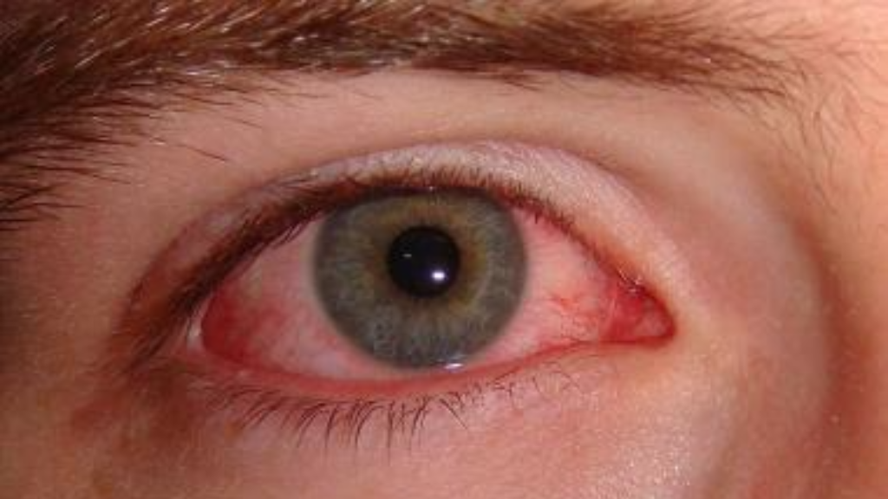

Definition: Glaucoma is a group of eye conditions characterized by damage to the optic nerve, often associated with increased pressure inside the eye (intraocular pressure).
A condition characterized by increased pressure in the eye, leading to optic nerve damage.
Significant cause of blindness among adults over 60.
Vision loss from glaucoma is irreversible, making early detection and treatment crucial.
Identifying Glaucoma; Symptoms of Glaucoma.

Glaucoma often develops gradually and is asymptomatic in its early stages, making regular eye examinations crucial for early detection and treatment to prevent vision loss.
Initial loss of peripheral vision, often unnoticed until it significantly progresses.
Visual disturbances such as halos around lights.
Eye discomfort, redness, and blurred vision can signal acute cases.
Managing Life with Glaucoma; How to Control Glaucoma.
Regular use of prescribed eye drops and medications as directed by an ophthalmologist is essential for controlling intraocular pressure and preventing further damage to the optic nerve.
Consistent use of prescribed eye drops to manage eye pressure.
Engage in regular, comprehensive eye examinations for early intervention.
Lifestyle adjustments and protective measures can mitigate symptoms.